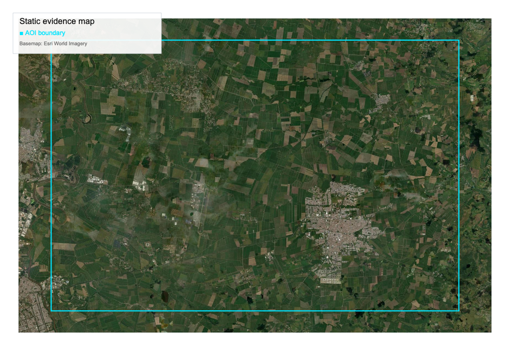

| Field | Value |
|---|---|
| assessment_capability | "inspectable_only" |
| regulatory_context | {"in_scope_articles": ["article-3"], "out_of_scope_articles": [], "regulation": "EUDR"} |
| report_type | "example" |
| Regulation | Article | Evidence class | Acceptance criteria | Result ref |
|---|---|---|---|---|
| EUDR | article-3 | aoi_geometry | aoi_geometry_present | result-001 |
| EUDR | article-3 | forest_loss_post_2020 | forest_loss_post_2020_max_ha | forest_loss_post_2020_max_ha |
| Evidence Class | Mandatory | Status |
|---|---|---|
| aoi_geometry | True | present |
| forest_loss_post_2020 | True | present |
| hansen_tiles_provenance | True | present |
| Criteria | Status | Details |
|---|---|---|
| aoi_geometry_present | {"criteria_id": "aoi_geometry_present", "decision_type": "presence", "description": "AOI geometry is present and referenced in inputs.", "evidence_classes": ["aoi_geometry"]} | |
| forest_loss_post_2020_max_ha | {"criteria_id": "forest_loss_post_2020_max_ha", "decision_type": "threshold", "description": "Forest loss after 2020-12-31 (lossyear >= 2021) must be <= 0 ha.", "evidence_classes": ["forest_loss_post_2020"]} |
| AOI | mixed_crop_latin_america_colombia |
|---|---|
| Bundle | latin_america |
| Report Version | aoi_report_v2 |
| Geometry Ref | geojson: inputs/aoi.geojson |
| Source | URI | SHA256 | Content Type |
|---|---|---|---|
| aoi_geometry | inputs/aoi.geojson | d447654778e081907f53c16857376f47e3827ef7b2a992438482a6cfd8d6d223 | application/geo+json |
| Metric | Value | Unit | Notes | Source | Criteria |
|---|---|---|---|---|---|
| aoi_area_ha | 41772.049123 | ha | geodesic_wgs84_pyproj | geometry | Not declared |
| end_year | 2025 | year | forest_end_year | hansen_gfc | Not declared |
| forest_2025_ha | 0.0 | ha | rfm_mask & (lossyear == 0) | hansen_gfc | Not declared |
| forest_end_year_ha | 0.0 | ha | forest_mask_end_year | hansen_gfc | Not declared |
| forest_loss_post_2020_percent_of_aoi | 0.0 | percent | forest_loss_post_2020_ha / aoi_area_ha | hansen_gfc | Not declared |
| loss_2021_2025_ha | 0.0 | ha | rfm_mask & (lossyear in 21..25) | hansen_gfc | Not declared |
| loss_total_ha | 0.0 | ha | rfm_mask & (lossyear > 0) | hansen_gfc | Not declared |
| pixel_current_tree_cover_ha | 0.0 | ha | pixel_mask | hansen_gfc | Not declared |
| pixel_forest_loss_post_2020_ha | 0.0 | ha | pixel_mask | hansen_gfc | Not declared |
| pixel_initial_tree_cover_ha | 0.0 | ha | pixel_mask | hansen_gfc | Not declared |
| rfm_area_ha | 0.0 | ha | rfm_mask | hansen_gfc | Not declared |
| Field | Value |
|---|---|
| enabled | false |
| parcel_layer | "kataster:ky_kehtiv" |
| parcel_count | null |
| notes | "Populate when Maa-amet WFS integration is enabled in pipeline." |
| Field | Value |
|---|---|
| source | "maaamet" |
| outcome | "not_comparable" |
| reason | "missing_reference_forest_area" |
| reference | {"method": "missing", "source": "missing", "value_ha": null} |
| computed | {"forest_area_ha": 0.0} |
| comparison | {"diff_pct": null, "tolerance_percent": 5.0} |
| csv_ref | reports/aoi_report_v2/mixed_crop_latin_america_colombia/maaamet/maaamet_forest_area_crosscheck.csv |
| summary_ref | reports/aoi_report_v2/mixed_crop_latin_america_colombia/maaamet/maaamet_forest_area_crosscheck.json |
map_config.json · static map PNG · static SVG

No assumptions declared in this report.
| Result | Status | Criteria |
|---|---|---|
| result-001 | pass | aoi_geometry_present |
| forest_loss_post_2020_max_ha | pass | forest_loss_post_2020_max_ha |
{kind=link}
{kind=link}